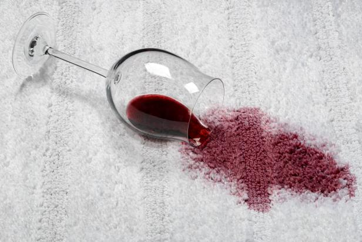

And I'm a Student
During COVID, my grandfather and I decided to do a project to help increase the number of N95 masks since there was an immense shortage. We came up with a solution to create more masks by creating a "half mask". This was done by simply cutting the N95 mask in half and securing the mask to your face using a specific procedure. This ended up being an even more health efficient way to wear a mask due to a lower dead space which makes the mask easier to breathe with. I then submitted this project to the Alameda Science Fair and won 4th place!
Another project I did was a science project for my middle school science fair. I was figuring out which method was the most efffective way at getting a stain out of a carpet. I went through numerous different procedures and attempts until I found the most useful way to do this. I found out that the most effective way was warm water! Who knew that all you needed to get a stain out is some good old warm water?